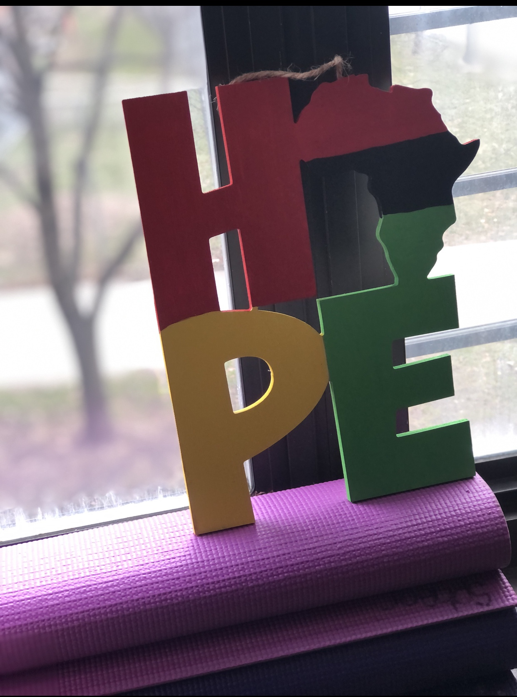
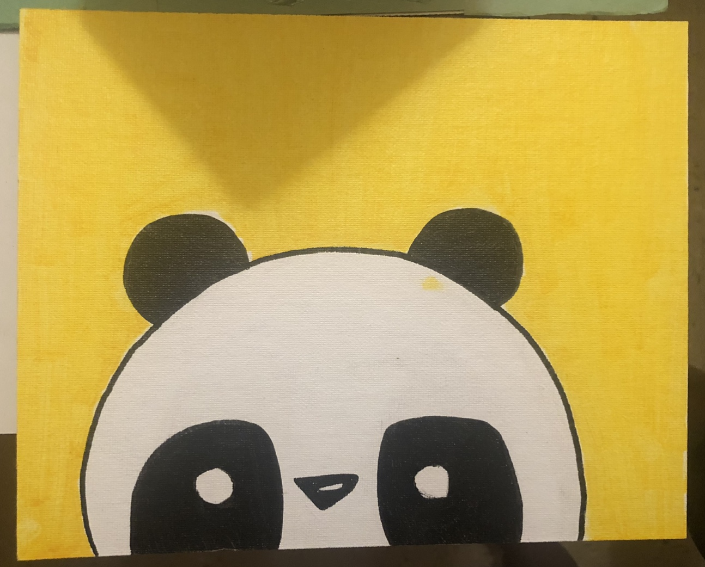
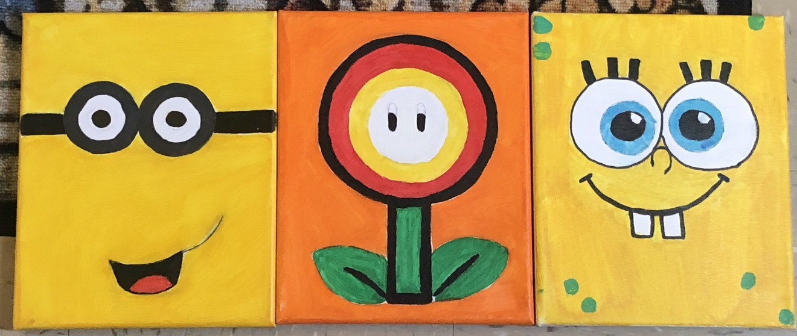

On this page, you will learn about addition in math. Addition is the process of adding two or more numbers together to find their sum. It is an essential concept in mathematics and is used in everyday life.
Blue Horizon by Jane Smith
This stunning painting captures the tranquility of a peaceful ocean scene. The use of bold blues and soft whites creates a sense of calm and serenity, making it the perfect addition to any room in your home.
Red Sunrise by John Doe

This vibrant painting depicts a breathtaking sunrise with bold reds, oranges, and yellows. It's sure to add a pop of color and energy to any space.